Nova Games of Canada is a good example of why an arcade-company history cannot be reconstructed by copying a manufacturer field from a database. Depending on which surviving artifact is opened first, Nova can look like a publisher, a cabinet manufacturer, a software developer, a licensee, a conversion-kit supplier, a trade-show partner, or a company attached to somebody else’s program. All of those descriptions can be true in particular cases. None describes the entire business.
Its conventional released-game catalog is small. Four videogames can be defended with enough evidence for a conservative website-facing count. But even that number requires explanation. Port Man was a Taito design that Nova handled under license in North America. Intrepid is much more strongly supported as a Nova product and likely Nova development. Zarya Vostoka survives as a Nova-attributed sequel to Intrepid but with a thinner physical and commercial record. Super Triv has firsthand testimony tying development directly to Nova. Beyond those four are a Nova-branded version of an Amenip-associated game family, a completed but cancelled Miner 2049er arcade conversion, late system hardware called The Terminators ’87, and several disputed or misattributed products that have accumulated around the Nova name.
That complicated footprint is the point of the story. Nova was not simply a four-game software house. It was a small Canadian amusement-game company working inside the early-1980s network of licenses, conversions, imported programs, local cabinet manufacture, distributor relationships and trade-show experimentation.
1. Before Nova: Neil Rubin and the Fountainhead background
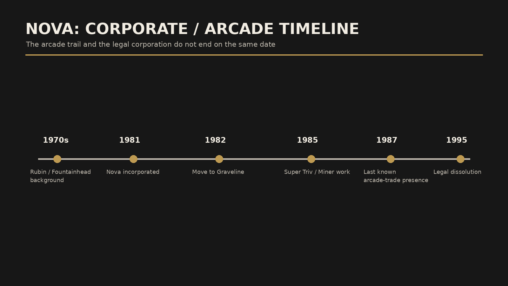
Nova did not emerge from nowhere in 1981. Neil Rubin, one of its founding directors, had already been active in the Canadian amusement trade during the 1970s. Period trade evidence places Rubin as managing director of Fountainhead Amusement Corporation, and the earlier Fountainhead business used 3150 Sartelon Street in St-Laurent.
That address later becomes unusually important. Nova’s own articles of incorporation place its original registered office at the same 3150 Sartelon Street. The shared Rubin connection and shared address establish a real business-network continuity between Fountainhead and the new Nova corporation. Federal records reviewed during the project also connect Rubin to Fountainhead Fun Centers and a Maritimes arm, reinforcing that Nova emerged from a pre-existing amusement-business network rather than from an isolated software startup.
They do not establish a legal succession.
That distinction matters because the corporate trail points away from the simple version of the story. Fountainhead companies continued to exist during the 1980–81 transition instead of disappearing neatly into Nova. The evidence therefore supports a more cautious reconstruction: Rubin entered Nova with experience, contacts and a pre-existing amusement-business network that included Fountainhead, while Nova itself was incorporated as a separate company.
For an arcade history, that is already meaningful. Small coin-op firms often grew out of operator, route, distribution and service networks rather than appearing as isolated software startups. Nova’s roots fit that pattern better than the image of a brand-new videogame studio beginning from zero.
2. March 1981: Nova becomes a corporation
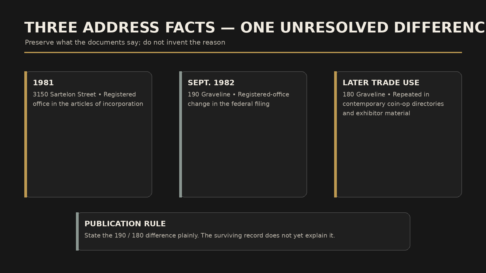
The strongest fixed point in Nova’s history is March 13, 1981. The federal certificate of incorporation records Les Jeux Nova Ltée / Nova Games Ltd. under the Canada Business Corporations Act on that date. Its articles place the registered office at 3150 Sartelon Street, St-Laurent, Quebec.
The early director record identifies Neil Rubin and Courtney Lai-Hing as directors. Andrée Bertrand appears in formation/incorporator material and signed an early corporate filing as president. In September 1982, Ed Prest joined the board while Rubin and Lai-Hing remained directors.
A surviving annual return is wonderfully direct about what the company considered itself to be doing. Under “Main Types of Business,” Nova wrote: AMUSEMENT GAMES.
On September 14, 1982, the registered office moved from 3150 Sartelon to 190 Graveline in Ville St-Laurent. Later arcade-industry directories and exhibitor listings frequently use 180 Graveline instead. The surviving evidence does not yet explain that ten-number difference. It is safer to preserve both facts than to invent a property-layout explanation: 190 Graveline is the registered-office address shown on the federal filing; 180 Graveline is the business/contact address that appears repeatedly in later trade material.
This early corporate chronology also establishes something important about another company often tied to Nova: Amenip.
3. Amenip and Nova: a real connection, but not a proven merger
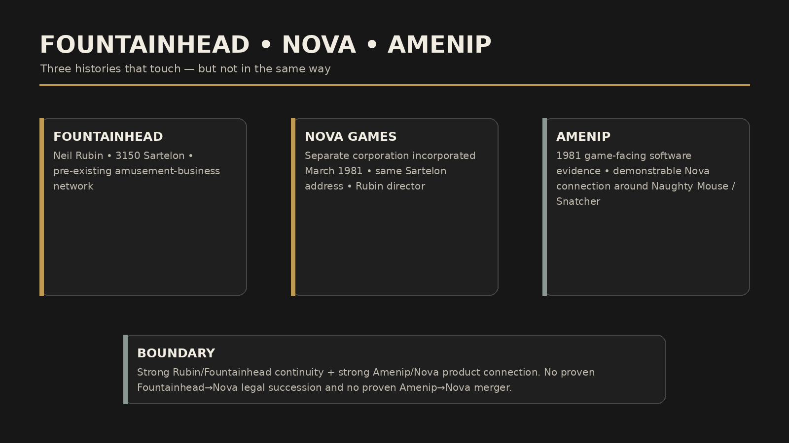
Later arcade databases have made it tempting to summarize the early story as “Amenip became Nova Games.” The surviving chronology does not support that sentence.
Amenip-associated arcade software was already in circulation in 1981 and remained visible into 1982. Nova, meanwhile, was legally incorporated in March 1981. The two histories overlap. Nova cannot be explained as a company that suddenly came into existence after Amenip disappeared if Nova already existed while Amenip credits were still appearing. The 1981 date is not based only on later database metadata: direct game-facing evidence survives on Mariner and Round-Up, where Amenip is visible in the contemporary software record. Those screens are useful chronological anchors for the company’s activity before and during Nova’s first year.
Yet the relationship between them is not imaginary. The game evidence is too strong for that.
Amenip’s surviving arcade record includes five distinct game families whose programs, licenses and regional presentations involve companies such as U.S. Billiards, Centuri, Taito, Roller Tron, Techstar, Game Plan, ESG and Nova. That pattern is useful because Amenip often survives inside software or rights documentation while another company dominates the cabinet or sales material.
The clearest Nova connection is the Naughty Mouse / Snatcher family.
Current MAME preservation identifies one Naughty Mouse set as Amenip (Palcom Queen River) and another as Amenip Nova Games Ltd. A surviving cabinet photographed for the International Arcade Museum makes the commercial connection physical: the marquee reads SNATCHER, with NOVA directly beneath the title. Yet the running game screen shows PALCOM QUEEN RIVER.
Three layers therefore survive in one machine family:
- Amenip in the preserved software lineage;
- Nova on the cabinet presentation;
- Palcom Queen River in the running program credit.
That is exactly the kind of case where a single “manufacturer” field destroys more history than it preserves.
What remains missing is the agreement that explains the relationship. No recovered corporate document shows Amenip changing its name to Nova, merging into Nova, owning Nova, being owned by Nova, sharing Nova’s officers, or functioning as a formal Nova alias. Amenip could have been a developer supplying Nova, a rights holder, a contracted software operation, or a commercial partner connected through an agreement that has not survived.
Arcade Side B therefore treats the connection as strong at the game and commercial-presentation level but unresolved at the legal-corporate level.
That decision also affects counting. Snatcher / Naughty Mouse belongs in Nova’s broader arcade story because a Nova-branded cabinet survives. It is not folded into the four-game core as though Nova unquestionably originated the underlying program.
4. SNATCHER / Naughty Mouse: the cabinet that refuses to simplify the story
The surviving Snatcher machine is one of the most useful physical artifacts in the entire Nova project because it captures the messiness of early arcade commerce in a single photograph.
The cabinet tells the operator and player one thing: SNATCHER — NOVA.
The software tells the preservation historian something else: the game belongs to the Naughty Mouse program family, with Amenip appearing in its preserved attribution and Palcom Queen River appearing in program credit.
Even the preserved ROM names retain the Snatcher identity in part of the alternate set. The result is not evidence of confusion so much as evidence of how games moved. A software author or rights holder could sit underneath a different regional title. A local amusement company could package or manufacture the machine. A program credit could preserve another organization involved in the software lineage. The cabinet and the code answered different commercial questions.
For Nova, the safest conclusion is narrow but substantial: Nova had a direct commercial and physical role in at least one Snatcher presentation of the Naughty Mouse family. The evidence is stronger than a later database attribution because the Nova name survives on the machine itself.
What it does not prove is that Nova wrote the original game, owned Amenip, or should receive sole authorship of the family.
This early case sets the pattern for the rest of Nova’s history. The company repeatedly appears at different points in the product chain, and the role must be established title by title.
5. Port Man: Nova as licensee and North American commercial partner
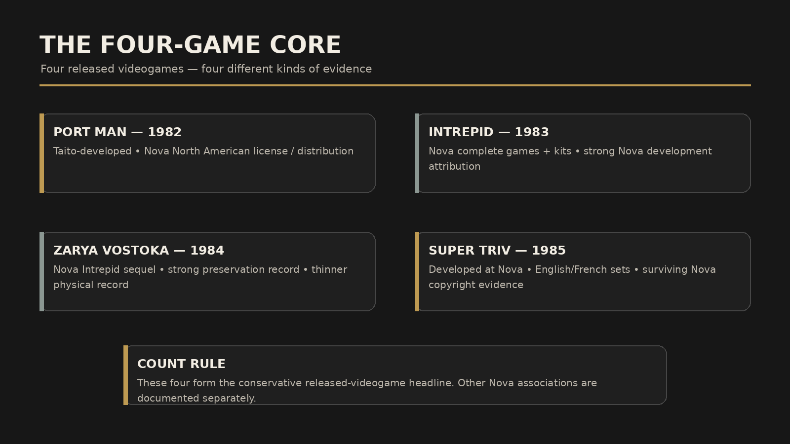
If Snatcher shows Nova participating in a complicated multi-company lineage, Port Man shows a cleaner and more familiar role: licensed regional handling of somebody else’s game.
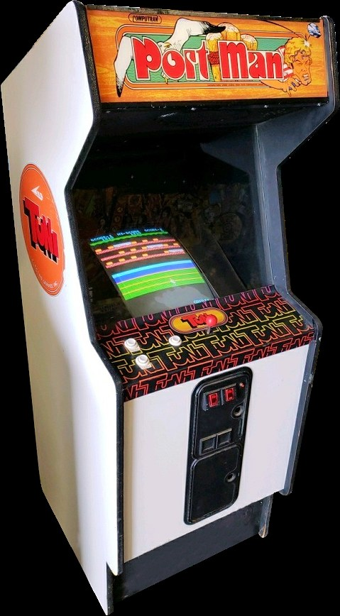
Port Man originated with Taito and was being shown publicly in Japan by early 1982. The game casts the player as a dock worker trying to catch cargo, carry it across a dangerous multi-level waterfront, and throw it into the moving bays of a ship while trolleys and a rock-throwing saboteur interfere. A second warehouse phase replaces the ship with falling explosives and a playfield that can literally deteriorate when the player misses a catch.
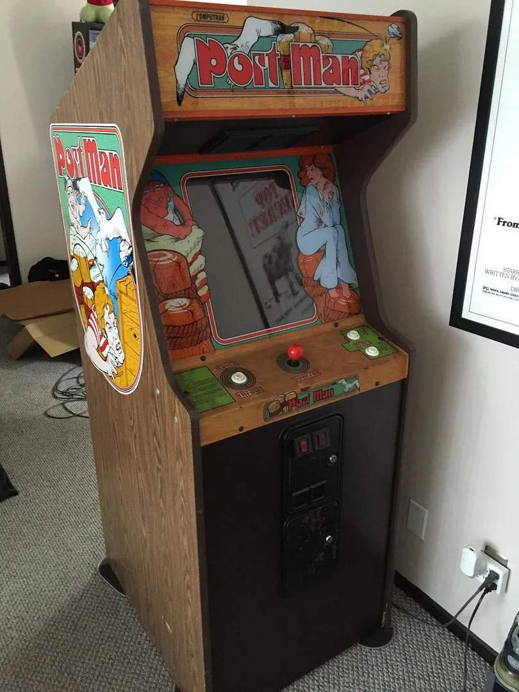
The game is mechanically odd enough to be memorable. Its basic catch/throw action requires deliberate timing, carried cargo affects mobility, the moving ship demands target prediction, and the warehouse turns falling objects into a positional scoring system. It is a modest early-1980s game with more overlapping systems than its screenshots suggest.
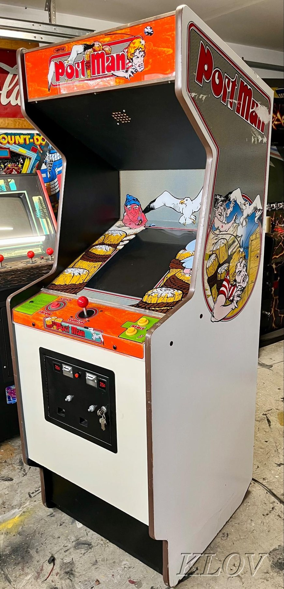
For Nova’s history, however, the important fact is commercial rather than mechanical. The surviving research consistently identifies Taito as the developer and Nova Games Ltd. as the North American license/distribution partner. Other legitimate and illegitimate versions of the game survive under Port Man, Dock Man and related regional or bootleg forms, including a Computran-branded North American machine and European variants.
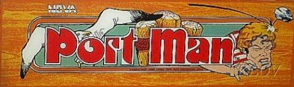
That complicated afterlife is exactly why Port Man must not be used as evidence that Nova developed all the games it sold. In Nova’s four-game core count, Port Man counts as a released Nova arcade product because Nova commercially handled its licensed North American version. It does not count as an original Nova software design.
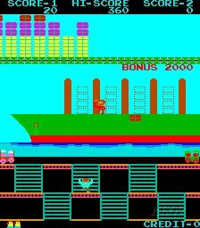
That difference becomes especially important when the story reaches Intrepid.
6. Intrepid: when Nova becomes the product maker
Intrepid, released in 1983, is the first Nova title in this history for which the surviving commercial evidence looks like a house product rather than a regional license.
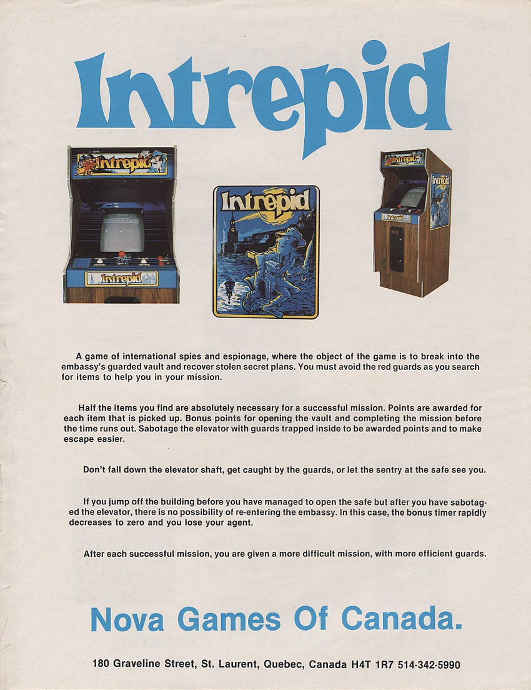
Nova’s own sales material offered Intrepid both as a complete game and as a conversion kit. The kit included the printed circuit board, main harness, marquee/screen plexi, control-panel overlay and side decals. That is direct evidence of Nova supplying the product to operators in a form that could create either a complete machine or a converted one. It also helps explain why surviving examples are difficult to classify neatly as dedicated versus conversion cabinets.
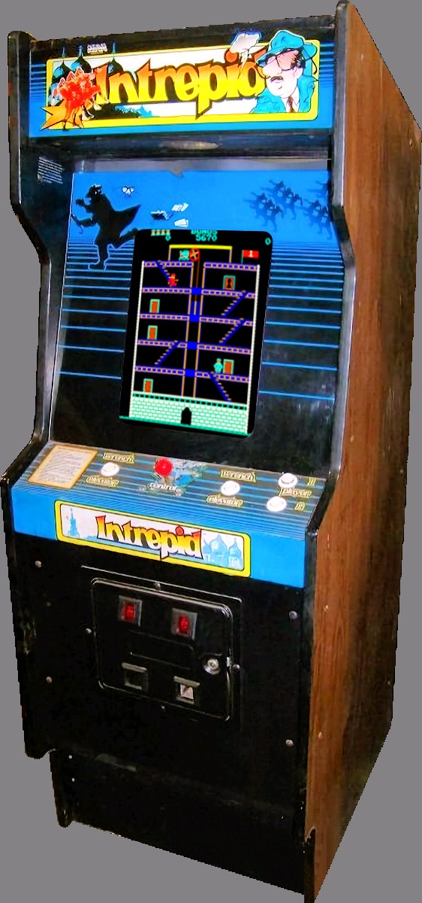
The game itself is far more ambitious than its tiny sprites suggest. The player controls Spy 001, entering a five-story embassy to recover stolen secret plans and escape. The building is shown as a cutaway, with stairs, doors and a central elevator. Entering rooms opens smaller maze-like spaces containing equipment. Four items are mission-critical: a key, disguise, identification card and safe combination. Other objects alter how the mission can be approached: jet boots increase movement speed, a map reveals information, a wrench can disable the elevator, and an umbrella enables a rooftop escape.
Those objects are not merely point bonuses. They perform different functions—access, security bypass, information, movement, environmental control and escape. Experienced play therefore becomes route planning rather than simple collection. The first attempt feels like wandering through a dollhouse embassy. Later attempts become operations.
The opposition escalates without requiring an entirely new map. Guards become more aggressive, later missions increase pressure, and a fast-moving lightning cloud eventually joins the pursuit. Time-based scoring rewards both infiltration and extraction. The player can leave through the building or, with the umbrella, leap from the roof and float back to the waiting getaway car.
This is why Intrepid matters to the Nova story. Its design suggests a company doing more than repackaging a licensed board. The surviving commercial material places Nova at the center of the product, and preservation sources consistently credit Nova as developer/publisher. A surviving repaired PCB has also been documented with Nova Games copyright-marked ROM labels.
The individual programmer, designer and artist credits have not yet surfaced. Arcade Side B therefore avoids inventing a named development team. The publication-safe conclusion is: Nova unquestionably manufactured and marketed Intrepid as its own 1983 product, and Nova development is strongly supported even though the individual creators remain unidentified.
In practical terms, Intrepid is the clearest early point where Nova stops looking merely like one participant in somebody else’s chain and starts looking like an arcade game maker in its own right.
7. Zarya Vostoka: the sequel that nearly disappeared
The next title, Zarya Vostoka, is one of the strangest pieces of the Nova catalog because its identity is stronger than its surviving commercial footprint.
Current preservation records identify Zarya Vostoka as a 1984 Nova Games of Canada game and place it on the same basic machine configuration as Intrepid. It is consistently described as Intrepid’s sequel. The surviving program set includes its own zv-identified main-program ROMs, while important graphics and sound ROMs remain undumped.
That incomplete preservation helps explain why the game has remained obscure. Unlike Intrepid, no equally strong period sales flyer, service manual or clearly documented production cabinet has yet surfaced in the project. The game survives more through code and preservation history than through a rich commercial artifact trail.
There is also a date problem worth preserving rather than hiding. Current and historical MAME declarations support 1984, but an older auxiliary comment described the game as a 1983 Nova Games of Canada prototype. Those statements should not be averaged into a fake compromise date. The stronger current catalog declaration supports 1984; the older prototype wording remains a legacy annotation whose evidentiary basis has not been recovered.
The same caution applies to release scale. Zarya Vostoka belongs in the four-game confirmed released catalog because the surviving preservation record is strong and consistent enough to treat it as a Nova title. But its physical and period-commercial evidence is materially weaker than Intrepid’s. Arcade Side B should therefore say exactly that instead of pretending all four Nova releases survive equally well.
Publication-safe wording: Zarya Vostoka is a strongly documented Nova Games of Canada sequel to Intrepid, generally dated 1984. Its exact commercial-release scale, surviving cabinet history and individual authorship remain unresolved. An older MAME-family annotation called it a 1983 prototype and is retained as conflicting legacy metadata.
8. What the first half of the catalog already tells us
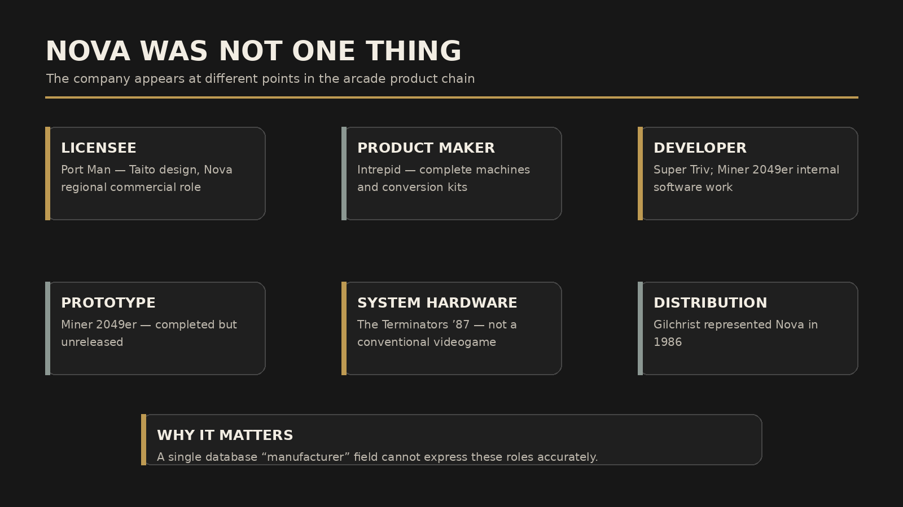
By the end of Zarya Vostoka, Nova’s role has already changed several times.
With Snatcher / Naughty Mouse, Nova is a physically documented commercial participant in a game family whose software lineage also names Amenip and Palcom Queen River. With Port Man, Nova is a regional licensee and distributor for a Taito design. With Intrepid, Nova becomes the clearest product maker and strongly supported developer in its catalog. With Zarya Vostoka, Nova appears to extend that original line with a sequel whose software survives better than its paper trail.
Those differences are not editorial complications to be removed. They are the history.
The second half of the company’s story makes the pattern even clearer. Super Triv gives us firsthand evidence of development inside Nova. Miner 2049er reveals a completed internal project killed by licensing failure. Infinity 1 raises a trade-show partnership problem. The Terminators ’87 moves Nova into system hardware. Gilchrist Vending shows a distribution relationship. Then the public arcade trail fades in 1987 even though the corporation itself survives on paper until 1995.
That later story is where Nova stops looking like a tiny four-title database entry and starts looking like what it actually was: a small amusement-game company trying several ways to survive in a rapidly changing arcade business.
9. Super Triv: a voice from inside Nova
If Intrepid is the strongest surviving physical case for Nova as a product maker, Super Triv gives us something even rarer: a surviving human voice from inside the company.
Modern preservation records identify Super Triv as a 1985 release from Nova du Canada, with both English- and French-question versions preserved. The surviving hardware is itself slightly complicated. At least one French set is associated in MAME with a Hara Industries PCB, and collector documentation has shown Nova-labelled Super Triv material on surviving boards. That is exactly the kind of mixed hardware lineage that can confuse a database if the cabinet, board supplier and software developer are treated as one role.
The more important evidence comes from former Nova employee Bruno Fontaine. In a 2021 exchange preserved by the Miner 2049er Museum, Fontaine identified Super Triv as a game developed at Nova. That testimony matters because it moves the company beyond inference. With Intrepid, we can reconstruct Nova’s commercial role from its own flyer and surviving product material. With Super Triv, an employee who worked inside the operation remembers development taking place there.
The game itself is a trivia format rather than the more adventurous design of Intrepid, but that should not diminish its historical value. Trivia machines were a practical part of the mid-1980s coin-op market. They could be refreshed through question sets, appealed to bars and general amusement locations, and did not depend on the graphical escalation that was rapidly making conventional videogame development more expensive.
Super Triv also shows Nova adapting rather than simply repeating itself. The company had already licensed a Japanese game, sold an espionage title as both a complete machine and a kit, and attempted a sequel. A bilingual trivia product fits a Canadian manufacturer trying to find a durable niche in an increasingly difficult market.
Publication-safe wording: Super Triv was developed at Nova Games of Canada and survives in English- and French-question versions. Surviving boards show a more complicated manufacturing lineage, including Hara Industries hardware, but that does not override the firsthand evidence placing development at Nova.
10. Miner 2049er: the Nova arcade game that never escaped
The most revealing Nova project may be the one operators never got to buy.
For years, an arcade version of Miner 2049er was little more than a tantalizing possibility. Then a surviving marquee turned up carrying the words Nova Games of Canada. The artifact was interesting, but a marquee by itself could not prove that a finished arcade game had ever existed.
Bruno Fontaine changed that.
Fontaine recalled that he personally completed Nova’s arcade adaptation in Z80 assembly language. His final version contained 10 levels, including horizontally extended stages with smooth scrolling, and he specifically remembered that the layouts were not simply the same stages as the original home-computer game. Staff at Nova played the finished version. In other words, this was not a logo mock-up or an abandoned concept sheet. It reached the stage of a playable final prototype.
Then the business side killed it.
According to Fontaine, Nova’s agreement with the original game’s rights holder collapsed at the last moment. The company abandoned release. He was never able to recover his final prototype, and years later his former boss told him that it had been thrown away.
That story changes how Nova should be understood. A company that merely imported or repackaged other firms’ boards would not need an employee completing a ten-level Z80 conversion with new level design and scrolling behavior. Miner 2049er is direct evidence that Nova possessed genuine internal software-development capability.
It is also a painful example of why arcade history cannot be reconstructed only from release lists. A conventional database sees no released Nova Miner 2049er and therefore has nothing to count. The historical record sees a programmer, a surviving marquee, a completed prototype, internal playtesting and a licensing collapse. The product failed to reach the market, but the work absolutely happened.
For Arcade Side B, Miner 2049er therefore belongs prominently in Nova’s story while remaining outside the confirmed released-game count.
Publication-safe wording: Nova completed an unreleased arcade adaptation of Miner 2049er. Programmer Bruno Fontaine recalled finishing the game in Z80 assembly with ten levels, including scrolling stages and layouts different from the home-computer original. A licensing failure cancelled release at the last moment, and the final prototype is believed lost.
11. Infinity 1: the partnership problem
Infinity 1 is where Nova’s history again resists a simple manufacturer label.
A 1984 AMOA photograph recovered by arcade historian Keith Smith shows the unusual Infinity 1 cabinet in a context involving people from Nova Games of Canada and Hoffman International. Smith originally captioned the machine as “Infinity 1 from Nova Games of Canada,” and later research established that Nova was indeed associated with the product at the show.
But the stronger commercial paper trail belongs to Hoffman.
Hoffman International advertised Infinity 1 repeatedly in Play Meter under the slogan “The Game of a Thousand Faces.” The advertising described a generic cabinet concept able to accept different game boards, and Hoffman continued promoting the system through 1984. More decisively, Hoffman International owned the INFINITY 1 U.S. trademark for coin-operated videogame machines and parts.
Smith himself later cautioned that the 1984 show photograph does not establish whether Nova or Hoffman was actually the manufacturer. The safest reconstruction is therefore not to award the product to whichever company happens to stand closest to the cabinet in one photograph.
Infinity 1 is still useful to the Nova story because it places Nova inside a trade-show relationship around a generic, changeable cabinet concept at a time when operators were increasingly interested in extending cabinet life through board swaps and conversion kits. What it does not provide is enough evidence to count Infinity 1 as a confirmed Nova-manufactured product.
Publication-safe wording: Nova Games was demonstrably associated with Infinity 1 at the 1984 AMOA show, but Hoffman International has the stronger ownership and advertising record, including the Infinity 1 trademark. Nova’s exact role remains unresolved, so Infinity 1 is not counted as a confirmed Nova product.
12. The Terminators ’87: Nova moves into system hardware
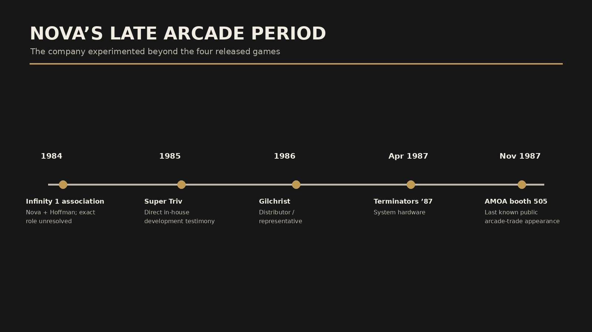
Three years after Infinity 1, Nova appears beside another cabinet-oriented product — this time with much clearer attribution.
The April 1987 Play Meter Spring Buyer’s Guide lists The Terminators ’87 directly under Nova Games. Crucially, it does not place the product among ordinary videogame titles. It appears under SYSTEM HARDWARE, alongside products such as Nintendo’s UniSystem, DualSystem and PlayChoice-10, the Bally Sente Super System, Dynamo’s video hardware system and other configurable cabinet platforms.
The surviving page photograph shows a conventional upright cabinet with THE TERMINATORS on the marquee. What the surviving evidence does not yet explain is exactly how Nova intended operators to use it. No manual, brochure or technical description has surfaced in this project explaining the board interface, conversion method or game-changing architecture.
That uncertainty should stay visible. The category tells us what kind of product Nova was selling; it does not tell us every internal detail.
The Terminators ’87 is nevertheless important because it is the latest specifically identified Nova product in the surviving trade record. By 1987, Nova was not simply trying to release another Intrepid-style videogame. It was marketing coin-op system hardware — a different answer to the same industry problem that Infinity 1 had raised earlier: how to keep a cabinet commercially useful when individual videogame titles aged quickly.
Publication-safe wording: The Terminators ’87 was a documented Nova Games system-hardware product advertised in 1987. Its exact architecture remains unresolved, and it should not be counted as a conventional released videogame.
13. Gilchrist Vending: representation, not ownership
Another piece of Nova’s mid-1980s survival strategy was distribution.
The name Gilchrist appears beside Nova in 1986 trade-show material, and without further context it would be easy to misread that pairing as a corporate merger, shared ownership or an individual Nova executive.
Contemporary distributor records make the relationship much clearer.
T.W. Gilchrist Vending Ltd. of Toronto was a long-established Canadian coin-op distributor and operator led by Tom Gilchrist. A 1986 Cash Box distributor directory explicitly lists the lines Gilchrist represented: NSM, Dynamo, Nova, Bally and U.S. Billiards. Play Meter’s Expo ’86 exhibitor material likewise combines the names as Nova Games of Canada / Gilchrist Vending while still using Nova’s St-Laurent contact information. The same Expo ’86 material places the combined Nova/Gilchrist presentation at booths 906–908. An older booth-420 attribution encountered during the project is therefore rejected as incorrect.
That is strong evidence for a distribution and representation relationship, not a hidden corporate identity.
The timing supports the same interpretation. Gilchrist’s earlier directory entries did not consistently list Nova, and later listings no longer do. Nova also appears on its own again at AMOA Expo ’87. Nothing in the recovered corporate record shows Gilchrist owning Nova or Nova becoming part of Gilchrist.
This distinction matters because small arcade companies often reached operators through distributors whose names later became entangled with the manufacturer. In Nova’s case, the evidence lets us separate the roles cleanly: Nova made or supplied the product; Gilchrist represented the line.
14. 1987: the public arcade trail fades
Nova’s last currently documented public arcade-industry appearance comes at AMOA Expo ’87.
The final exhibitor list places Nova Games of Canada, Ltd. at booth 505. That appearance is historically important even though surviving show coverage has not yet identified exactly what Nova displayed there. The Terminators ’87 had been documented earlier that year, so it is tempting to assume that the system remained the company’s featured product in November. No recovered source currently proves that, and Arcade Side B should not turn chronology into evidence.
What can be said is stronger than it first appears: Nova was still maintaining a visible trade-show presence in late 1987. After that, the Canadian company largely disappears from the arcade-industry record recovered so far.
That disappearance must not be confused with the later companies whose names happen to contain Nova. British Nova Productions, Quebec’s Nova Industries, Germany’s Nova Apparate and other unrelated or ambiguously catalogued entities create abundant false hits after 1987. Once those are removed, the real Canadian Nova trail becomes quiet.
The legal corporation, however, did not vanish at the same moment. Surviving federal records show Les Jeux Nova Ltée / Nova Games Ltd. was formally dissolved on December 11, 1995. The responsible chronology therefore has three different endpoints: the last currently documented arcade-trade presence in 1987, the subsequent period in which the business disappears from the visible coin-op record, and the corporation’s legal dissolution eight years later.
That is less tidy than writing “Nova closed in 1987,” but it is much more accurate.
15. Four released games — and much more than four pieces of arcade history
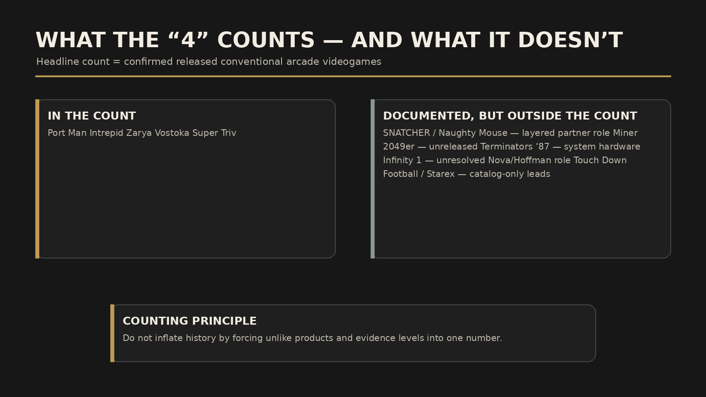
By conventional released-videogame counting, Nova Games of Canada has a small catalog.
Arcade Side B’s conservative core is four confirmed released arcade videogames:
- Port Man — a Taito-developed game handled by Nova under license in North America.
- Intrepid — Nova’s strongest physically documented complete-game/kit product and a strongly supported Nova development.
- Zarya Vostoka — the elusive Intrepid sequel, preserved more strongly in software than in surviving commercial artifacts.
- Super Triv — a Nova-developed trivia game supported by firsthand employee testimony and surviving English/French versions.
That number is useful only if its definition remains visible.
It does not include Snatcher / Naughty Mouse as a fifth conventional Nova release because Nova’s role there is layered with Amenip and Palcom Queen River. It does not include Miner 2049er because the completed Nova version was never commercially released. It does not include The Terminators ’87 because the surviving trade source identifies it as system hardware rather than a videogame title. Infinity 1 remains outside the count because Nova’s exact role is unresolved and Hoffman International has the stronger ownership record. Touch Down Football and Starex remain catalog leads without the physical or primary evidence required for promotion into the confirmed list.
The point of the count is therefore not to make Nova look larger or smaller. It is to keep unlike evidence from being forced into one number.
Nova’s historical footprint is broader than four games because the company participated in several different layers of the arcade business: licensing, local manufacture, kit sales, original development, prototype work, hardware systems, trade-show partnerships and distributor representation. That diversity is exactly what a conventional manufacturer field tends to erase.
16. The other Novas: how a small company became several companies in databases
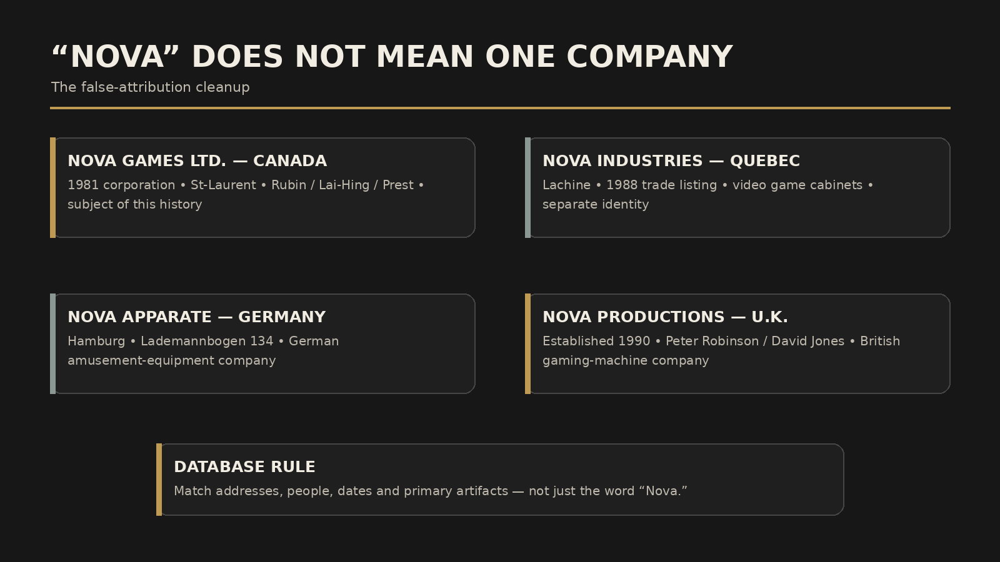
Researching Nova Games of Canada creates a problem that has very little to do with Nova itself: the word “Nova” is common enough that later archives and databases sometimes collapse unrelated manufacturers into one company record. Once that happens, a Canadian firm whose visible arcade life belongs mainly to the 1980s can suddenly appear to have produced British shock machines, German air hockey, generic Quebec cabinets and 1990s laserdisc games.
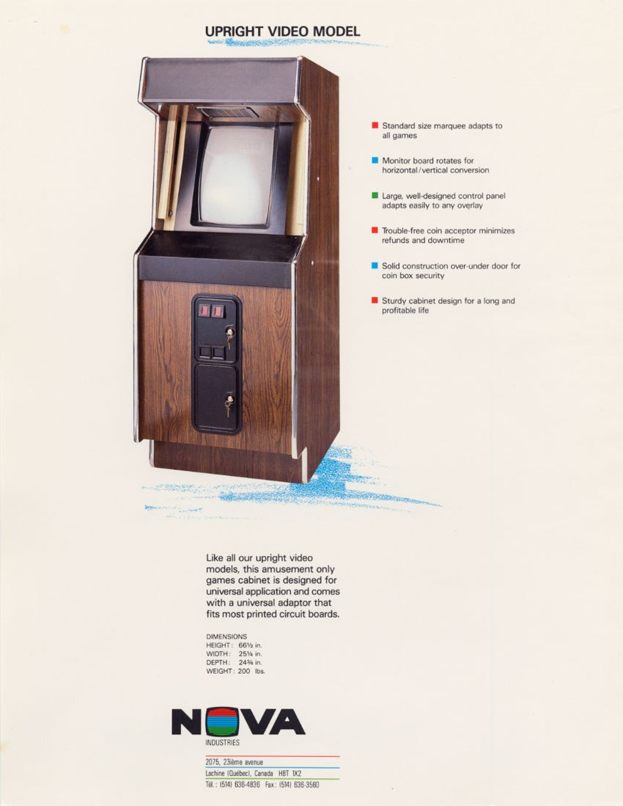
Those extra products look impressive until the original artifacts are opened.
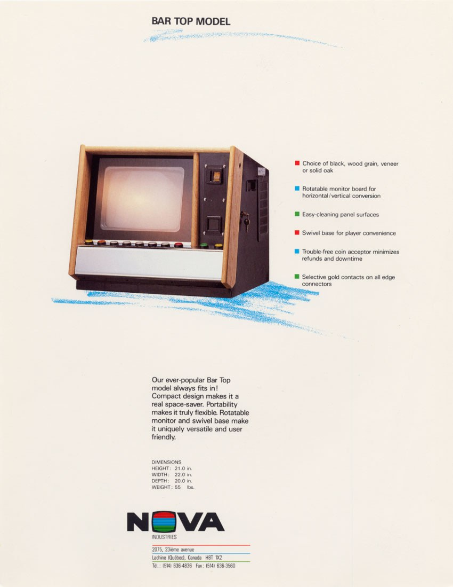
One of the clearest examples is Nova Industries of Lachine, Quebec. Several generic cabinet sheets have circulated under metadata associating them with Nova Games Ltd. The flyers themselves say something different. They identify NOVA INDUSTRIES at 2075, 23ième avenue, Lachine, Québec and advertise cabinet forms such as an upright video model, bar-top model and casino model. The logo, company name and address do not match Les Jeux Nova Ltée / Nova Games Ltd. Contemporary Cash Box material reinforces the distinction: at a 1988 trade show, Nova Industries is listed separately as a Lachine company dealing in video game cabinets.
Because Nova Games of Canada had already used generic cabinets, conversion kits and system hardware, the mistake is understandable. The products look as though they could fit its history. Geography makes the confusion even more tempting: St-Laurent and Lachine are both in the Montreal industrial orbit. But resemblance is not identity. No recovered filing, officer list, trade announcement or address bridge presently connects Nova Industries to Nova Games Ltd. Arcade Side B therefore treats Nova Industries as a separate company unless future primary evidence proves otherwise.
The German NOVA APPARATE GmbH & Co. is even easier to separate. Flyers and manuals identify the firm at Lademannbogen 134, Hamburg, and period German documentation repeatedly uses the Nova Apparate name. Products associated with that company include the Indianapolis Super 400 and TAIFUN Air Hockey, along with German-market amusement and pinball distribution material. They belong to a German coin-op company, not to Neil Rubin’s Canadian Nova.
The British Nova Productions Ltd. creates the most serious contamination because it genuinely was an arcade and amusement-game developer and because some later database entries place its products beside Intrepid or Port Man. British court records remove the ambiguity. In a 2006 High Court judgment, Nova Productions is described as a United Kingdom company established in 1990, led by Peter Robinson and David Jones, and engaged in the design, manufacture and sale of gaming machines. That company developed products such as Street Viper, later skill-with-prize and amusement machines, and other 1990s/2000s equipment. It is not the Canadian corporation incorporated in 1981 under Neil Rubin and Courtney Lai-Hing.
This also disposes of Platoon and other later British-attributed Nova titles that periodically appear in broad database searches. They should not be pulled backward into the Canadian Nova catalog simply because a manufacturer field contains the word Nova.
The lesson is larger than a list of exclusions. Company-name matching is not company history. A database can accidentally create a fictional multinational corporation by joining records that share a name fragment. The cure is to return to addresses, directors, trademarks, legal filings, surviving flyers and period trade listings.
For Nova Games of Canada, that identity control is not a side issue. It is one of the central findings of the research.
Publication-safe wording: Later arcade databases and flyer indexes sometimes mingle Nova Games of Canada with unrelated companies sharing the Nova name. Nova Industries of Lachine, Nova Apparate of Hamburg and British Nova Productions are treated here as separate entities because their surviving artifacts, addresses and corporate histories do not match Les Jeux Nova Ltée / Nova Games Ltd.
17. The two catalog ghosts: Touch Down Football and Starex
Not every questionable title can be rejected as a false Nova. Two names remain more interesting because they come from a specialist arcade-catalog tradition that specifically attributes them to Nova Games of Canada.
Those names are Touch Down Football and Starex.
The surviving specialist catalog trail places Touch Down Football at approximately 84/03 and Starex at 84/04. Modern undumped-game references have repeated both attributions under Nova Games of Canada. That is enough to preserve them as research leads. It is not enough to promote them into the confirmed released-game count.
Repeated targeted searches have so far failed to locate a surviving cabinet, PCB, ROM dump, title screen, flyer, manual, price sheet, operator advertisement, photograph or contemporary game description for either title. Current mainstream preservation databases that otherwise list Nova’s known games do not independently establish either one. No period trade-show article recovered in this project names them as the products Nova displayed in 1984.
That leaves an awkward but useful category: credible catalog-only leads.
There are several possibilities. The titles may represent games that were announced but scarcely distributed. They may be regional names for games known elsewhere under different titles. They may have existed only in pre-release catalogs. They may reflect an error in a source that was subsequently copied. The evidence available today does not choose among those explanations.
Arcade Side B should therefore preserve the names rather than silently deleting them, because deletion would make future recovery harder. But they should be visually separated from the confirmed list. A reader should be able to tell immediately that these are not equivalent to Intrepid, Super Triv or Port Man.
Recommended website treatment:
- Touch Down Football — catalog-only Nova attribution; unverified physical release.
- Starex — catalog-only Nova attribution; unverified physical release.
Neither is included in the four-game headline count.
This is another place where an honest “unknown” carries more historical value than a confident guess. A future collector may eventually turn up a board, flyer or photograph that resolves one of these names. Until then, their proper home is the open file, not the confirmed catalog.
18. Nova Games role matrix: what the company actually did
The easiest way to misunderstand Nova is to ask for one word—developer, manufacturer, publisher or distributor—and expect it to describe every product. It cannot. Nova changed roles from project to project.
The Arcade Side B publication role matrix is therefore:
| Product / family | Year | Nova role | Status | Counted in 4 released games? |
|---|---|---|---|---|
| SNATCHER / Naughty Mouse family | 1981 | Direct cabinet/commercial association; exact Amenip/Palcom/Nova division unresolved | Strong Nova association, layered authorship | No |
| Port Man | 1982 | North American licensee / commercial supplier for a Taito-developed game | Confirmed released game | Yes |
| Intrepid | 1983 | Manufacturer/marketer; strong Nova development attribution; sold complete and as kit | Confirmed released game | Yes |
| Zarya Vostoka | 1984 | Nova-attributed sequel to Intrepid; thinner physical/commercial trail | Confirmed released game, release scale uncertain | Yes |
| Infinity 1 | 1984 | Trade-show/partner association with Hoffman International | Nova role unresolved | No |
| Touch Down Football | 1984 catalog | Specialist-catalog attribution | Unverified | No |
| Starex | 1984 catalog | Specialist-catalog attribution | Unverified | No |
| Super Triv | 1985 | In-house development strongly supported by Bruno Fontaine; English/French versions | Confirmed released game | Yes |
| Miner 2049er arcade | mid-1980s | In-house arcade adaptation programmed by Bruno Fontaine | Completed but unreleased | No |
| The Terminators ’87 | 1987 | Nova system-hardware product | Confirmed hardware, exact architecture unresolved | No |
That table shows why the final count has to be conservative. If every appearance of the Nova name were treated as an original Nova videogame, the catalog would be inflated with licenses, prototypes, partner products and hardware systems. If the count were restricted only to software demonstrably programmed by a named Nova employee, it would understate Nova’s actual commercial output.
The four-game headline is therefore not a claim that Nova created exactly four original programs from scratch. It is a released-videogame count based on the products that can be responsibly placed in Nova’s commercial arcade catalog.
Within those four, the roles remain different:
Port Man proves Nova could license and package an outside game. Intrepid proves it could offer its own complete machine and conversion kit. Zarya Vostoka shows continuation of that game line even though the physical record has nearly vanished. Super Triv gives us the strongest direct testimony for internal software development.
The non-counted material is equally informative. Miner 2049er proves development work that never became a commercial release. The Terminators ’87 proves Nova sold system hardware outside the ordinary one-game/one-cabinet model. SNATCHER proves that cabinet branding could attach Nova to software carrying different corporate credits. Infinity 1 illustrates a trade-show partnership whose exact division of responsibility remains unresolved.
This is not statistical untidiness. It is the shape of a small arcade company trying several business models in a volatile market.
19. People, addresses and a company timeline
The game catalog makes more sense when placed beside the corporate chronology.
1974 — Neil Rubin and Fountainhead. Period Canadian coin-op material places Neil Rubin as managing director of Fountainhead Amusement Corporation at 3150 Sartelon Street in St-Laurent. That does not make Fountainhead the legal parent of Nova, but it establishes Rubin in the amusement business years before Nova and ties him to an address that later becomes crucial.
March 13, 1981 — Nova incorporated. Federal records establish Les Jeux Nova Ltée / Nova Games Ltd. as a Canadian corporation. Its articles give 3150 Sartelon Street, St-Laurent, Quebec as the registered office. Founding directors include Neil Rubin and Courtney Lai-Hing. Formation paperwork also identifies Andrée Bertrand, who appears in the incorporation process and signed the initial director filing as president.
The reuse of 3150 Sartelon is one of the strongest pieces of continuity between Rubin’s earlier amusement-company network and Nova. It supports a business lineage. It does not, by itself, establish that Fountainhead was renamed, merged or legally converted into Nova.
1981–82 — Amenip-era overlap. Amenip-bearing games were already circulating while Nova legally existed. The surviving SNATCHER cabinet places NOVA beneath the marquee title while the running program credits PALCOM QUEEN RIVER, and current preservation material preserves an Amenip/Nova version of Naughty Mouse. This overlap is why the familiar “Amenip became Nova in 1982” story is too simple.
September 14, 1982 — move to Graveline and board expansion. An original registered-office filing moves Nova from 3150 Sartelon to 190 Graveline, Ville St-Laurent. On the same effective date, Ed Prest joins the board while Rubin and Lai-Hing remain directors. The surviving filing is unusually valuable because it anchors a corporate transition that later commercial sources blur.
1983–86 — 180 Graveline in the trade. Contemporary arcade-industry directories and show listings repeatedly give 180 Graveline rather than 190. Cash Box uses 180 Graveline for Nova’s 1984 trade-show listing, and Play Meter still uses it in its 1986 international directory. The project has not recovered a primary document explaining the ten-number difference. The safest presentation is therefore to preserve both facts rather than invent a building-number explanation: 190 Graveline is the registered-office address in the September 1982 federal filing; 180 Graveline is the later commercial address used in the arcade trade.
1983 — Intrepid. Nova advertises Intrepid as both a complete game and a conversion kit, demonstrating a commercial operation able to sell far more than software alone.
1984 — Zarya Vostoka and Infinity 1 context. Nova remains visible at major trade shows. Zarya Vostoka extends the Intrepid line. Infinity 1 places Nova alongside Hoffman International in an experimental generic-cabinet context, though Hoffman has the stronger ownership trail.
1985 — Super Triv. The game survives in English and French versions and is tied directly to development at Nova by Bruno Fontaine. This is the clearest surviving window into Nova as an internal software shop.
Mid-1980s — Miner 2049er. Fontaine completes a ten-level arcade adaptation, but licensing failure kills the release. The finished prototype later disappears.
1986 — Gilchrist representation. T.W. Gilchrist Vending of Toronto explicitly lists Nova among the manufacturers it represented. Expo material pairs the two names, demonstrating a distribution relationship rather than common ownership.
April 1987 — The Terminators ’87. Play Meter lists Nova’s latest identified product under system hardware.
Late 1987 — AMOA booth 505. Nova still appears independently on the final AMOA Expo ’87 exhibitor list. No recovered show report yet identifies the actual booth product.
After 1987 — the arcade trail quiets. Once unrelated Nova companies are removed, no later Canadian Nova coin-op appearance of comparable confidence has surfaced in this project.
December 11, 1995 — legal dissolution. Industry Canada’s surviving certificate establishes the formal dissolution date of Les Jeux Nova Ltée / Nova Games Ltd.
That timeline gives Nova two different lifespans that should not be confused. Its documented visible arcade career runs roughly from 1981 through 1987. Its legal corporate existence continued until 1995.
20. What remains unresolved
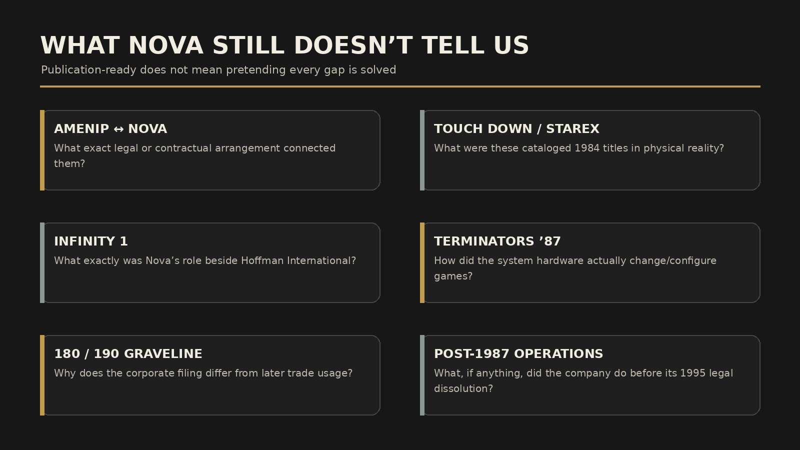
Nova is publication-ready without pretending every question has been answered. The unresolved list is now short enough to be meaningful.
What exactly connected Amenip and Nova? The relationship is real at the game and commercial-presentation level, but no recovered document yet defines the legal or contractual mechanism. A development agreement, publishing arrangement, shared investors, regional manufacturing deal or another structure could explain it. The evidence does not currently select one.
What were Touch Down Football and Starex? They remain credible catalog leads without physical confirmation. A single contemporary flyer, board photograph or operator notice could materially change the catalog.
What was Nova’s exact role in Infinity 1? The company was associated with the machine at the 1984 AMOA show, but Hoffman International has the stronger advertising and trademark record. A Nova/Hoffman contract, sales sheet or show report would resolve the division of responsibility.
How did The Terminators ’87 work? We know the product existed and that Play Meter categorized it as system hardware. We do not yet have the manual or technical brochure that would tell us how games were installed, swapped or configured.
Why do the records use both 190 and 180 Graveline? The 1982 federal filing gives 190; later trade sources give 180. The difference may be mundane, but it should remain unresolved until a document explains it.
What happened operationally after AMOA Expo ’87? Nova’s legal shell survived until 1995, but the recovered arcade-industry trail largely stops in 1987. Whether the company continued quietly in another business form, maintained only corporate existence, or attempted products that left no surviving trade record remains unknown.
Who actually designed Intrepid and Zarya Vostoka? Nova’s corporate role is well supported, but the individual programmers, artists and designers remain unidentified in the sources reviewed so far. Bruno Fontaine gives us a human name for Super Triv and Miner 2049er; the earlier original titles still lack equivalent creator credits.
These are not reasons to delay publication. They are the places where publication can help. A clear list of missing evidence gives collectors, former employees and archivists specific things to recognize if material surfaces later.
21. Why Nova Games matters
Nova Games of Canada was not a giant. That is precisely why its history is useful.
Large arcade companies often leave enough surviving paperwork that historians can reconstruct them from catalogs, annual reports, manuals, advertisements and interviews. A company like Nova survives differently. One part of the story lives in a federal filing. Another survives on a marquee. Another is preserved in ROM metadata. Another depends on a former programmer remembering work that never shipped. One trade-show photograph raises a question that a trademark record partially answers. One distributor directory explains why two company names appeared side by side. One incorrectly catalogued flyer can add an entirely different corporation to the story unless somebody reads the address block.
Nova therefore demonstrates how arcade history actually behaves at the small-company level.
The company could be a licensee on one product and a manufacturer on the next. It could sell a complete machine or a kit. It could develop software internally while using outside-origin hardware. It could finish a game that never escaped the office. It could stand beside another company’s experimental cabinet at a trade show and leave historians decades later trying to reconstruct who owned what. It could market system hardware in 1987 even as its conventional videogame catalog remained tiny.
That variety explains why the simple question “How many games did Nova make?” produces a misleading answer unless “make” is defined.
If the question means confirmed released arcade videogames sold under Nova’s commercial responsibility, the answer is four.
If the question means original programs demonstrably developed entirely inside Nova, the evidence becomes narrower and less complete because individual creator records are missing for some titles and Port Man was licensed from Taito.
If the question means every arcade product, prototype, cabinet association, hardware system and credible catalog lead connected to Nova, the number becomes larger—but also less uniform and less useful as a single statistic.
Arcade Side B therefore keeps the four-game count prominent while refusing to let that number become the whole history.
Nova’s importance is not that it secretly possessed a giant lost catalog. The importance is that its small surviving catalog exposes almost every complication that can hide inside one manufacturer field: licensing, regional manufacture, development, publishing, conversion kits, prototypes, hardware platforms, distributors, shared trade-show presentations, aliases and false corporate identity merges.
And there is one final reason to preserve the company carefully. Nova sits in the part of arcade history most vulnerable to disappearance: the layer between the famous Japanese or American developer and the local cabinet that actually reached an operator. Companies in that layer translated games across territories, built or supplied machines, sold kits, negotiated licenses and sometimes created games of their own. Their names could be physically prominent on a cabinet and nearly absent from later historical writing.
Nova Games Ltd. was one of those companies.
Its story begins not with a famous hit but with an amusement-business network and a Montreal address. It passes through an Amenip cabinet whose credits refuse to agree with one another, a licensed dockworker game, a surprisingly ambitious spy adventure, an almost-lost sequel, a bilingual trivia machine, a completed Miner 2049er conversion that was thrown away, and a system-hardware product whose manual has vanished. It ends not with a dramatic bankruptcy announcement but with the quieter pattern common to many small operators and manufacturers: the trade-show appearances stop, the public trail fades, and years later the legal corporation is dissolved.
That is exactly the kind of history Arcade Side B exists to keep from disappearing.
Source and evidence note
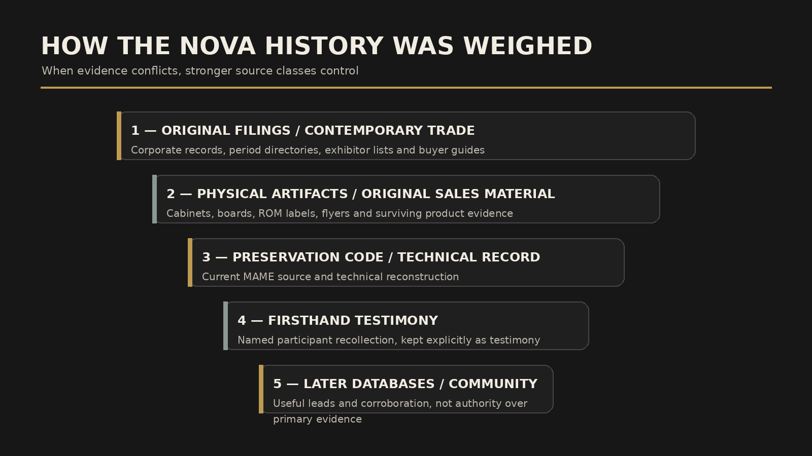
This publication master is paired with NOVA_ARCADE_SIDE_B_SOURCE_REGISTER.md, which maps the major claims and sections to original corporate filings, contemporary trade material, surviving physical artifacts, preservation code, firsthand testimony and secondary corroboration. When sources conflict, the research privileges original corporate filings and contemporary trade records, then surviving physical artifacts and original sales material, then preservation code/technical databases, with later databases and community recollection used as leads or corroboration rather than allowed to override stronger primary evidence.
The companion NOVA_ARCADE_SIDE_B_IMAGE_INVENTORY.md distinguishes actual publication-ready graphics included in the handoff from historical images that remain reference-only, source-restricted, or not physically recoverable in this session.
Cabinet imagery: period manufacturer materials, contemporary survivor photographs and contributor-provided examples are identified in captions. Machines are not assumed to have been built by the same company solely because they contain the same game; the Nova Industries examples are shown only as a name-attribution comparison.